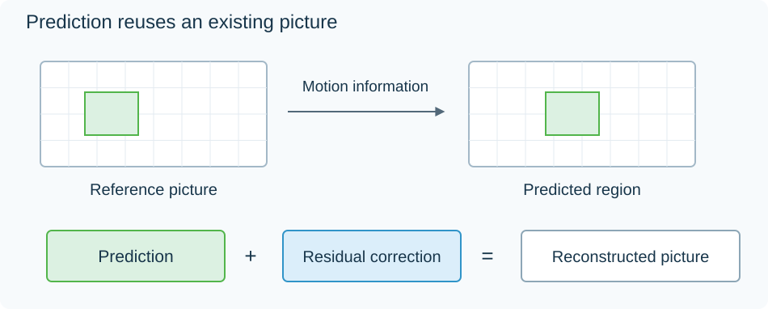

Inter-Frame Video Prediction
A new video picture often contains much of the scene already visible in another one. Inter-frame prediction describes a useful part of that decoded scene, then sends the information needed to correct it into the new picture.
The decoder is not asked to identify the object or guess its true movement. The encoded stream tells it which reference to use, where to sample it, and which correction to apply.

Conceptual motion prediction plus residual reconstruction, not a measured codec result.
Find a useful reference region
Suppose a reconstructed reference row is:
10, 20, 30, 40, 50, 60.
The current four-sample region needs values 31, 39, 53, 60. The reference region starting two positions to the right of the current block's coordinate is 30, 40, 50, 60, already a close match.
The encoder can select that reference and transmit an offset corresponding to +2 reference-sample positions in this declared convention. A motion vector locates the predictor. Its sign describes that coordinate relationship, rather than directly declaring a person's real-world velocity.
A camera pan, object movement, or a repetitive texture can all make a shifted region useful. The encoder searches among permitted predictors and balances their fit against the cost of describing them.
Add the residual
The required difference between the current input and predictor is:
| Position | Input | Predictor | Residual |
|---|---|---|---|
| 1 | 31 | 30 | +1 |
| 2 | 39 | 40 | −1 |
| 3 | 53 | 50 | +3 |
| 4 | 60 | 60 | 0 |
These are the residual values. A real codec can transform and quantize them before entropy coding. In a lossless representation they can be retained exactly. In a lossy representation the reconstructed corrections can differ.
For a toy quantizer rounding these corrections to multiples of four, none of the values are half-step ties:
+1, −1, +3, 0 → 0, 0, +4, 0.
Add those decoded corrections to the predictor and the result is 30, 40, 54, 60. Its errors relative to the input are −1, +1, +1, 0.
The sample arithmetic isolates prediction and approximation. It omits the named codecs' transform, quantization, and filtering details.
A well-matched predictor leaves a small correction. A region containing a new object, an uncovered background, or different lighting can need larger corrections. The encoder can select another reference or use intra prediction for that region instead.
Reconstruct the same reference on both sides
Now imagine using this reconstructed picture to predict the next one. The decoder has 30, 40, 54, 60, not the encoder's original 31, 39, 53, 60.
The encoder must build the next predictor from the reconstructed picture too. It therefore contains a local reconstruction loop that follows the decoder's operations. If it predicted from the original input instead, its transmitted residual would assume values the decoder does not have, causing a mismatch that could propagate into later pictures.
This is why decoded reference pictures are part of the coding process. They are not merely pictures the player happened to retain for display.
The vector can point between samples
Movement need not be an exact number of sample positions. A codec can specify fractional-position prediction, using defined interpolation rules to construct reference values between the stored grid points.
For example, a requested reference position halfway between two samples needs a calculated predictor rather than an integer array lookup. Each codec specifies its filters and rounding so compatible decoders construct the expected values. The residual then corrects this calculated predictor just as it corrects an integer-position one.
This interpolation forms a predictor for a coded picture. It does not add new video presentation times.
Combine available references
A predictor can also combine information from two decoded references. For a scalar illustration, reference predictions of 40 and 44 average to 42. A residual of +1 reconstructs 43.
A full picture can have different reference choices and coding modes in different regions. The picture's “P” or “B” description does not mean every sample uses one identical operation.
One reference may be earlier and another later in display order. A decoder can process the later-displayed anchor first, retain it, then decode pictures scheduled before it on screen. The coded order satisfies the dependencies; presentation timestamps and the picture order then restore the viewing sequence.
GOP structure and reference storage follow those relationships in more detail. When seeking into an Emby film, reconstruction starts from a suitable access point and rebuilds the needed reference state before the requested picture can be shown.
Motion interpolation performs a different job: it estimates an extra picture at a time never supplied by the original coded sequence. Inter-frame coding instead has a represented target picture and transmitted corrections that define its reconstructed result.